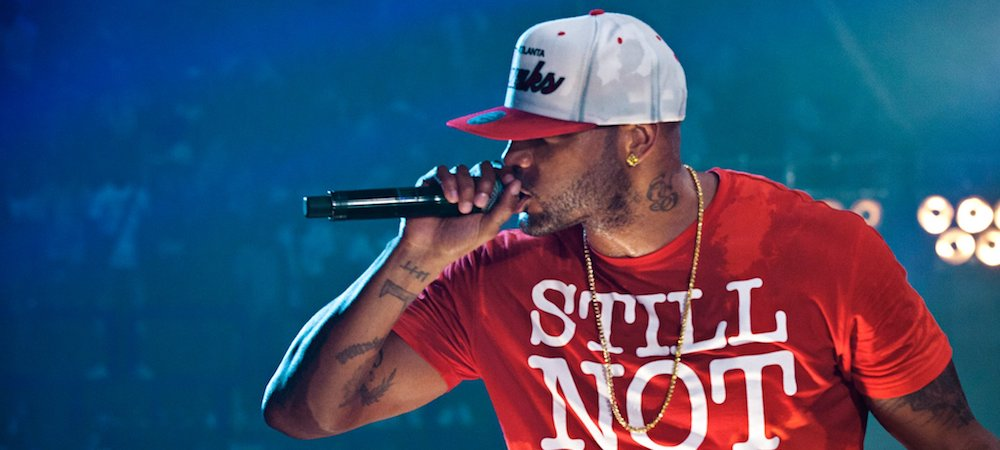

Mehdi Moussa
CEO @Nothing
I worked in a startup named E-Cotiz as a business developer. After a reflection about some digital projects I would like to launch, I wanted to have some strong knowledges about programming and coding. Ideally I would like to start working on my projects just after Le Wagon.
More about meVoici mes passions
Le rugbyLe rugby est un sport qui me passionne depuis maintenant 7 ans. Au delà de l'aspect physique qui me permet de me dépenser comme bon me semble, l'esprit d'équipe et la cohésion ont fait la différence par rapport aux autres sports |
|
|  |
La musiqueLa musique est tout particulièrement le hip-hop ont bercé mes oreilles depuis ma tendre enfance. Cette sensibilité pour la musique hip-hop ne s'explique pas vraiment car c'est le style vers lequel je me suis tourné en premier. Booba reste et restera l'artiste emblématique qui a marqué mon adolescence et m'inspire toujours aujourd'hui |

|
La cuisineJe mélange, je mélange, je mélange |
Zinédine ZidaneRien à ajouter, les vrais savent... |